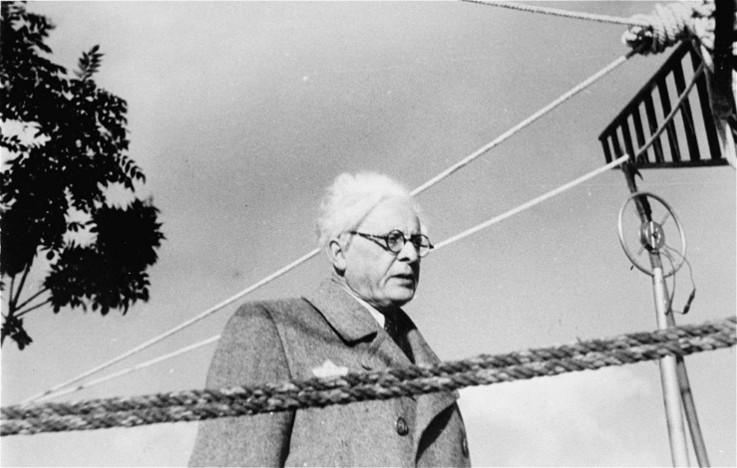

Research note · 9 November 2026
Macbeth and King of the Jews
Macbeth in the Ghetto: Rumkowski, Guilt, and Racial Ambiguity in King of the Jews
In the novel King of the Jews, Leslie Epstein depicts a performance of Macbeth by children in a fictionalised version of the Łódź Ghetto, raising troubling questions about Jewish complicity under Nazi persecution, the moral ambiguities of power, and the racial prejudices embedded in the Shakespearean tradition.
Introduction
King of the Jews, the controversial 1979 Holocaust novel by American Jewish author Leslie Epstein, depicts the history of the fictional Bałuty Ghetto in Nazi-occupied Poland, and the life of its Elder, I. C. Trumpelman. As head of the Jewish Council, Trumpelman runs the Ghetto, though ultimately power always lies with the Nazis.

One of the more remarkable chapters in the novel concerns a chaotic production of Macbeth, staged in the ‘House of Culture’ – a building in the Ghetto dedicated to cultural performances. Performed in Polish by children from the Ghetto Orphanage as Tragedia Makbeta, the play would appear to offer temporary respite from the horrors of the Ghetto, a world beyond hunger and deportation. Shakespeare does not, however, enter the novel as a consoling emblem of culture and civilisation, surviving even amidst the inhumanity of the Ghetto. The performance is an accusation about Jewish complicity in genocide.
Its most implicated spectator is Trumpelman. Faced with Nazi demands, Trumpelman is forced to deliver Jews for deportation to the death camps, so that others may live. Trumpelman is not slow to see that the production is, ultimately, for and about him. Like Macbeth, he is ambitious for power; like Macbeth, he also condemns others to death, even innocent children. ‘Trumpelman and Madame Trumpelman! On the stage!’: ‘It is us they are playing!’
This is a Macbeth designed to catch the conscience of a putative ‘King’ – and it works. Watching the play unfold and its audience become ever more violently unruly, Trumpelman turns paler and paler, until he is ‘chalk-coloured’. Finally, he erupts into self-justification. But his defence also resembles a confession:
The Elder wrapped his cape about his body and thrust out his chin. ‘I, Trumpelman, came like a robber to rob you of your dearest ones. I, Trumpelman, took you by the hand and led you to death. It’s Trumpelman who made you work until your hearts explode. No wonder you turn from him now! Abandon him! What a monster he is! Lock him up in a cage! Ha! Ha! That’s your mistake, Jews! A big mistake! We are in the same cage together! There are no bars between you and me! And look! In this same cage with us there is a hungry lion! He wants to devour us all! He’s ready to spring! And I? Trumpelman? I am the lion tamer. I stuff his mouth with meat! It’s the flesh of my own brothers and sisters! The lion eats and eats! He roars! But he does not spring. Thus, with ten Jews, I save a hundred. With a hundred, I save a thousand. With a thousand, ten thousand more. My hands are bloody. My feet are bloody. My eyes are closed with blood. If your hands are clean, it is because mine are dirty! I have no conscience! That’s why your conscience is clear! I am covered in blood completely!’
‘My hands are bloody’, Trumpelman admits, echoing Lady Macbeth. But he turns his guilt into a claim to moral authority: ‘If your hands are clean, it is because mine are dirty’. Trumpelman casts himself as a martyr, taking on the sins of the Ghetto so that others may appear morally clean. Self-accusation transforms into self-exculpation. But Trumpelman knows that Macbeth is the moment when his grip on power begins to loosen.
Bałuty and Łódź, Trumpelman and Rumkowski
King of the Jews remains controversial for its depiction of the Bałuty Ghetto and Jewish complicity in the Holocaust. But the novel has its basis in history. Bałuty is based on the Łódź Ghetto in occupied Poland – Bałuty was a working-class district of Łódź that became the heart of the Jewish Ghetto – and Trumpelman is based on Chaim Rumkowski, who has been described as the most controversial Jew in modern history.

Rumkowski was appointed by the Nazis to head the Jewish Council of Elders in Łódź, where he became the de facto ruler of the captive Jewish population. He ruled the Ghetto as something of a dictator: he consolidated his power, suppressed opposition, and came to believe that he was ruling a Jewish state. Rumkowski presided over the administration of the Ghetto, which included the organisation of Jewish labour for the German war economy. He even issued his own currency, a symbol of the extraordinary, if ultimately illusory, authority he had acquired.
But his power depended entirely on the Nazis. Rumkowski collaborated with the Germans in organising deportations, including, most notoriously, those of children. On 4 September 1942, Chaim Rumkowski delivered his notorious speech, ‘Give Me Your Children’, pleading with the inhabitants of the Ghetto to surrender all children under ten in the belief that sacrificing them might save the remaining population. The children who were rounded up were sent to the Chełmno extermination camp, where they were murdered.
Like Trumpelman, Rumkowski was dedicated to the ‘cultural life’ of the Ghetto, and opened the ‘House of Culture’ (Dom Kultury) in 1941. By the end of 1941, it had staged 85 theatrical performances, attracting over 70,000 attendances. Rumkowski attended performances and censored songs and sketches critical of himself or the Jewish Council. He prohibited further performances in 1943, regarding some of them as a threat to his authority.
There is no record of an official performance of Macbeth, or indeed any Shakespeare play, in the House of Culture. Tragedia Makbeta is a literary invention on the part of Epstein. What the play does is unmask the bloody reality that underlies the veneer of ‘normal’ cultural life in the Ghetto; it implicates Trumpelman, even as he attempts to use culture as a way of affirming the supposed civility of his rule.
It is particularly – if grimly – ironic that the play should be performed by children, considering that Rumkowski sacrificed children to ensure his continued rule, like the child-killer Macbeth. He was also a paedophile who preyed on the children of the Łódź Ghetto Orphanage, as survivor Lucille Eichengreen records in her testimony, Rumkowski and the Orphans of Lodz. Though Trumpelman believes that the children have been ‘put up’ to the performance by leftist political agents operating against him, it appears that the children chose the play themselves, precisely to implicate and condemn him.
Rumkowski and Shakespeare
Though there is no record of a Shakespeare performance in Łódź, there is something of a Shakespearean discourse around Rumkowski. One document from the Ghetto describes Rumkowski as a ‘Jewish King Lear’:
Once Rumkowski became the one-hundred-percent ruler of the ghetto Jews, he was no longer the same person. As long as he was unsure of his position, he had heart failure almost every day, and he used to faint whenever a difficulty arose. The stronger his position became, the less heart trouble he had, and now, when he is all-powerful, the problem has vanished altogether. The master has no more need to pretend, the mad actor truly believes that he is the Jewish King Lear. He has also changed externally. Those who remember him as a stooping, sickly, weak man—always worrying, always gloomy, wrapped in a shawl against the cold—would not recognize him now.
New strength has poured into his old man's body, along with power. Looking fit and well-fed, he radiates energy in every direction. He wears new, military-style boots, perfectly tailored trousers and a classy, rather sporty fur coat. He strides proudly from his winter residence to the Balut Market. There, he listens to ‘political’ reports from the police, from secret agents, from regular informers, from all sorts of schemers itching for a position. He revels in the organization he has created in such a short time. And everyone lives in fear of him…
Everybody in the clique Rumkowski has gathered around him sings paeans to his genius and his mission. Once, speaking to an associate about his mission, he declared, ‘What do you know about power? Power is sweet, power is everything, is life’. And with a fanatical gleam in his half-crazed eyes, he finished, ‘But woe to him who makes the slightest attempt to wrest power from me’.
Rumkowski had become so absorbed in performing sovereignty that he mistook his theatrical role for political reality: he seemed to forget that he only served at the behest of the Nazis. Not unlike Lear, he surrounded himself with flatterers, but he was a king whose power could be stripped from him at any moment. Where he departs from Lear is that he never seems to have reached that realisation, or that he might ‘shake the superflux’ to the more impoverished in the Ghetto (King Lear, 3.4.35–36). While he strutted around in ‘robes and furred gowns’, the Jews apparently under his protection wore ‘tattered clothes’ and starved to death in the streets (King Lear, 4.6.180–81).
Primo Levi also turned to Shakespeare to reflect on Rumkowski and his delusions of power. At the end of his essay ‘The Grey Zone’ – which appears in his remarkable 1986 collection, The Drowned and the Saved – he invokes Measure for Measure, quoting Isabella and her denunciation of ‘man, proud man’, who, ‘Dressed in a little brief authority’, forgets his own mortal frailty (Measure for Measure, 2.2.146).
We are all mirrored in Rumkowski, his ambiguity is ours, we hybrids moulded from clay and spirit; his fever is ours, the fever of our Western civilization which ‘descends to hell with trumpets and drums’, and its miserable adornments are the distorting image of our symbols of social prestige. His folly is that of presumptuous and mortal Man as he is described by Isabella in Measure for Measure, Man who
‘Dressed in a little brief authority,
Most ignorant of what he’s most assured,
His glassy essence, like an angry ape
Plays such fantastic tricks before high heaven
And makes the angels weep…’Like Rumkowski, we too are so dazzled by power and prestige as to forget our essential frailty: willingly or not we come to terms with power, forgetting that we are all in the ghetto, that the ghetto is walled in, that beyond the fence stand the lords of death, and not far away the train is waiting.
For Levi, Rumkowski exemplifies the vanity of those who mistake the temporary possession of power for genuine sovereignty, forgetting that ‘the ghetto is walled in, that beyond the fence stand the lords of death, and not far away the train is waiting’.
Whether Rumkowski was motivated by a genuine desire to save Jewish lives or by his own appetite for power over the captive population of Łódź remains ambiguous. He certainly abused his power and his position. But by turning the Ghetto into a centre of industry, Rumkowski made Łódź the longest-lived Ghetto in the occupied East. He seemed to believe that the Nazis would spare Łódź if he could show its productivity, however misplaced that belief was.
The Ambiguities of Macbeth
Tragedia Makbeta implicates Trumpelman as an ambitious, power-hungry dictator, a Macbeth in the Ghetto. But the performance does not necessarily conclude with any straightforward division between guilt and innocence. Trumpelman also inhabits the ‘grey zone’, as Levi calls it, that morally ambiguous space where the distinction between victim and perpetrator becomes troublingly unstable, and conventional judgements of right and wrong are profoundly complicated.
This ambiguity is concentrated in the image of bloody hands. When Trumpelman claims that his hands are bloody so that others might remain clean, his words cannot simply be dismissed. If anyone else were in his position, they would face the same moral quandary: to collaborate with the Nazis – the Others, as they are called in the novel – or risk even more Jewish lives, perhaps even the whole Ghetto. Other Jewish Elders faced the same dilemmas in the Ghettos, though not all responded as Rumkowski did; Adam Czerniaków, head of the Warsaw Ghetto Jewish Council, committed suicide after he was ordered to participate in the deportation of children to the death camps, though that only left others to enforce the deportations. The Nazi regime places Trumpelman in a position in which the survival of some appears to depend upon the sacrifice of others. His guilt and his self-exculpation are inseparable: to be a saviour, he has to be guilty; to do right, he must do wrong.
When he appeals to necessity, Trumpelman is also justifying his own self-aggrandising exercise of power. But he cannot entirely exorcise the guilt that his claim to martyrdom seeks to redeem. So if Trumpelman is Macbeth, it is also because he is a man conscious of his own guilt, whose bloody hands testify to a conscience that cannot finally be suppressed, whatever he says about having ‘no conscience’. ‘I am covered in blood completely!’
The ambiguity is not only moral, however; it is also racial.
I have been fascinated for some time with the figure of Lady Macbeth, who in King of the Jews is played by Gutta Blit, from the Łódź Orphanage, now ‘all grown up’: ‘you could practically see her bosom!’ Blit is racially ambiguous: she is Jewish, but is so dark-skinned that she might also appear to be a ‘Gypsy’ or ‘a Negro woman’. Her brown head and black braid solicit competing racial interpretations, none of which settles her identity; she is a profoundly equivocal figure.
The same might be said for Lady Macbeth. Over recent times, critics such as Celia R. Daileader and David Sterling Brown have attended to the ‘blackness’ of Lady Macbeth, whose inversion of normative ideas of gender identity also aligns her with the witches (Macbeth, 1.5.40). Lady Macbeth famously wants to clothe herself in the ‘dunnest smoke of hell’ (Macbeth, 1.5.51). Her words figuratively align ‘blackness’ with devilish transgression and opacity, in keeping with prevailing early modern thought. Though conventionally imagined as white, Lady Macbeth identifies herself with darkness, inviting a racial reading of words that might otherwise appear to be merely moral imagery. The casting of Blit makes that racial dimension newly visible.
The ambiguity surrounding her precise racial identity is, of course, telling in a world governed by pseudo-scientific racial categorisation. Under Nazism, Jews, Roma and Black people were all victims of racial persecution, though in distinct ways, by a regime committed to the supposed supremacy of the ‘Aryan’ race. The invocation of Blackness also draws a transatlantic racial vocabulary into the scene, revealing the ‘multidirectional’ relationship between the Holocaust and colonialism, the genocide of the Jews and the African slave trade.
This uncertainty does not simply universalise victimhood, as if all racial histories were interchangeable. Instead, it exposes race as an arbitrary but violent act of reading and, potentially, misreading – unstable in perception but brutally enforced by power. The irony is that a theatrical tradition capable of illuminating the moral complexities of persecution is also implicated in a European history of imagining, categorising and stereotyping racial Otherness. This becomes particularly disturbing when the witches invoke the ‘Liver of blaspheming Jew’ and ‘Nose of Turk’ (Macbeth, 4.1. 26/29). The bodies of religious and ethnic outsiders are imaginatively dismembered and incorporated into the monstrous concoction worked by the Weird Sisters. Performed by Jewish children in the Łódź Ghetto, these words acquire a terrible new resonance: the victims of Nazi racial persecution find themselves speaking the prejudices embedded in the European cultural tradition they have inherited. The racial violence inscribed in the language of Macbeth is literalised under Nazism.
Conclusion
What, finally, does it mean to perform Macbeth in the Łódź Ghetto? The play seems to offer a language in which to understand tyranny, but the performance also unsettles the judgements it invites. Trumpelman is a tyrant, but a tyrant who claims that his own bloody hands keep other hands clean; the girl who plays Lady Macbeth cannot be securely assigned to any of the racial categories through which she is perceived; and the witches speak a language of antisemitism that belongs to the very cultural tradition the children are performing. Epstein does not simply enlist Shakespeare as a witness to European culture and civility against Nazi barbarism. He uses the play to explore the complicities of power, but also the complicity of the canon itself.

Sources
Alan Adelson and Robert Lapides (eds.), Lodz Ghetto: Inside a Community Under Siege (New York: Penguin Books, 1989).
David Sterling Brown, Shakespeare’s White Others (Cambridge: Cambridge University Press, 2023).
Celia R. Daileader, ‘Weird Brothers: What Thomas Middleton’s The Witch Can Tell Us about Race, Sex, and Gender in Macbeth’, in Scott L. Newstok and Ayanna Thompson (eds.), Weyward Macbeth: Intersections of Race and Performance (New York: Palgrave Macmillan, 2010).
Lucille Eichengreen, Rumkowski and the Orphans of Lodz (San Francisco: Mercury House, 2000).
Leslie Epstein, King of the Jews (New York: Coward, McCann & Geoghegan, 1979).
Primo Levi, The Drowned and the Saved, trans. Raymond Rosenthal (New York: Summit Books, 1988).
Michael Rothberg, Multidirectional Memory: Remembering the Holocaust in the Age of Decolonization (Stanford: Stanford University Press, 2009).
William Shakespeare, King Lear, ed. R. A. Foakes, Arden Shakespeare, Third Series (London: Thomas Nelson, 1997).
William Shakespeare, Macbeth, eds. Sandra Clark and Pamela Mason, Arden Shakespeare, Third Series (London: Bloomsbury, 2015).
William Shakespeare, Measure for Measure, eds. A. R. Braunmuller and Robert N. Watson, Arden Shakespeare, Third Series (London: Bloomsbury, 2020).
Isaiah Trunk, Łódź Ghetto: A History, trans. and ed. Robert Moses Shapiro (Bloomington: Indiana University Press, 2006).